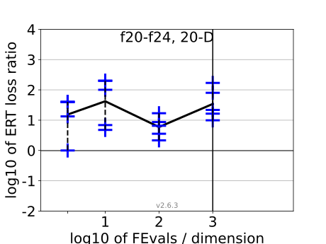
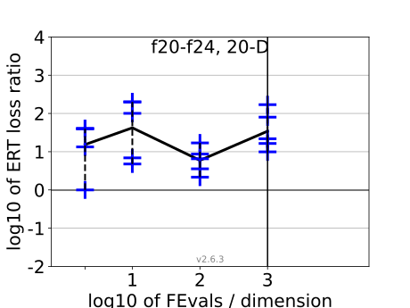

{kind=link}
{kind=link}
{kind=link}
{kind=link}
{kind=link}
{kind=link}
{kind=link}
{kind=link}
{kind=link}
{kind=link}
 
All functions in 5-D and 20-D
f1–f24 in 5-D, maxFE/D=1000
| #FEs/D | best | 10 % | 25 % | med | 75 % | 90 % |
|---|---|---|---|---|---|---|
| RLUS/D | 1e3 | 1e3 | 1e3 | 1e3 | 1e3 | 1e3 |
| 2 | 1.5 | 1.9 | 2.0 | 2.9 | 5.0 | 10 |
| 10 | 1.5 | 1.9 | 2.6 | 3.2 | 4.4 | 10 |
| 100 | 0.82 | 1.5 | 3.0 | 5.9 | 11 | 31 |
| 1e3 | 0.53 | 0.97 | 1.6 | 5.2 | 12 | 31 |
| 1e4 | 0.59 | 1.4 | 2.2 | 5.4 | 35 | 80 |
f1–f24 in 20-D, maxFE/D=1000
| #FEs/D | best | 10 % | 25 % | med | 75 % | 90 % |
|---|---|---|---|---|---|---|
| RLUS/D | 1e3 | 1e3 | 1e3 | 1e3 | 1e3 | 1e3 |
| 2 | 1.0 | 2.0 | 8.5 | 40 | 40 | 40 |
| 10 | 1.2 | 2.5 | 4.7 | 6.0 | 40 | 2.0e2 |
| 100 | 0.43 | 1.7 | 2.5 | 4.4 | 18 | 74 |
| 1e3 | 0.77 | 1.0 | 3.3 | 6.3 | 35 | 2.1e2 |
| 1e4 | 1.0 | 1.4 | 5.4 | 20 | 57 | 1.5e2 |
Separable functions in 5-D and 20-D
Misc. moderate functions in 5-D and 20-D
Ill-conditioned functions in 5-D and 20-D
Multi-modal functions in 5-D and 20-D
Weak structure functions in 5-D and 20-D
ERT loss ratios (see the previous figure for details). Each cross (+) represents a single function, the line is the geometric mean.{kind=link}